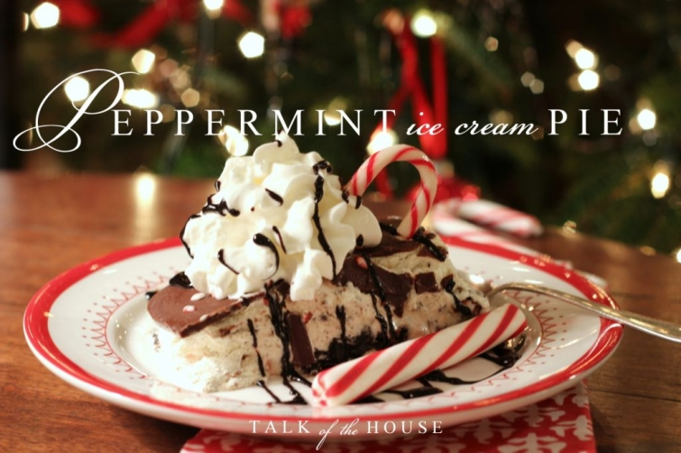
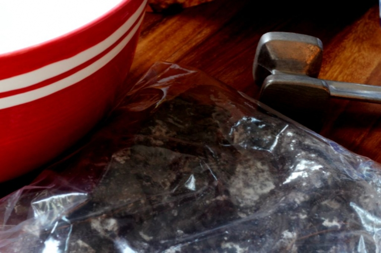

.png)
.PNG)
.PNG)
.PNG)
.PNG)
.PNG)
.JPG)
.JPG)
.PNG)
.PNG)


My goodness what peppermint lovers many of you are! I promised you a recipe for my peppermint dessert, so that is what I want to share today. Â You are probably already familiar with this recipe, but just in case there is one person out there who isn’t, this easy one is for you.
Here are the ingredients you will need:
1/3 cup butter, a 14.3 oz. package of Oreos,  York Dark Chocolate and Peppermint Sundae syrup, 1.5 qt. container of vanilla ice cream (thawed), 10 oz. crushed peppermint candy, 8 oz. Cool Whip (thawed), 7.25 oz. chocolate Magic Shell , whipped cream

First, place 30 Oreos in a zip lock bag, and crush them.

Next melt the butter in a 9 x 13 in. dish. Â Add the Oreos, and mix them well with the butter. Â Press into the bottom of the dish to form the crust.
 Next, squirt some of the York Sundae syrup all over the crust layer. Â Then dump the ice cream and Cool Whip into a large mixing bowl. Â Stir together. Â Crush the remaining Oreos from the package, and add them to the ice cream mix. Â Then add in the peppermint pieces (save a little to garnish with later,) and mix together.
Next, squirt some of the York Sundae syrup all over the crust layer. Â Then dump the ice cream and Cool Whip into a large mixing bowl. Â Stir together. Â Crush the remaining Oreos from the package, and add them to the ice cream mix. Â Then add in the peppermint pieces (save a little to garnish with later,) and mix together.
Pour the ice cream mixture into the dish with the chocolate crust.
Cover with plastic wrap and freeze. After an hour, squirt the Magic Shell over the top of the dish and sprinkle with more crushed peppermint pieces. Â Recover with plastic wrap and freeze until firm.
To serve: cut slices, top with whipped cream, drizzle with more York Dark Chocolate and Peppermint Sundae syrup, and add a few pieces of crushed peppermint candy.
It looks messy, but that combination of peppermint and chocolate is heavenly! Here is the recipe in case you would like to have it.
And finally, you might be wondering who won the Pottery Barn gift card.  Well, let’s take care of that while we are here. 🙂 The winning number for this giveaway was…
And the 196th comment was this one:
Congratulations Terry! Â I will be getting in touch with you soon to get your gift card to you. Â (I wish I could have given every one of you sweet readers one!)
Our last week of school before the Christmas break is in full force here, and the excitement level of the students is..um..quite high (to put it mildly! :)) I am looking forward to our break next week. Â We will be spending the holidays just relaxing here at home with family, except for our middle son who will be traveling to the West Coast on Christmas Eve. Â Will you be traveling for Christmas? Â If so, we would love to know where you are headed!
Until next time…


.PNG)
Congrats to Terry! This recipe looks heavenly. And yes…the kids are off the hook at school this week. One…more…day! Phew! 🙂
Traveling to my basement to spend time with my sewing machine…after I unearth it from the pile of stuff that its hiding under! Blessed Christmas to you and yours, Kelly.
This looks easy enough to make and oh so delicious. I will have to try this. We will be staying home for Christmas, as we are hosting with a dinner of ham and many wonderful sides. Our twin grandchildren, Joseph and Giada (daddy is Italian) just turned two on the 15th, so it will be a Christmas with all the more “eyes of wonder”. They are so fun and such busy little ones. Safe travels for your son, and may you all have a wonderful Christmas at home too, Kelly!
This looks like a great dessert! I’ve so enjoyed seeing all of your creative ways to prepare your home for Christmas this year. Thanks for sharing! Merry Christmas!
I’ve been shaking my head in wonder, Kelly. We will be home at our table surrounded by people we didn’t even know existed last year at this time!! Our new DIL and grandson, our other sons girlfriend and her parents. For years and years it was just the 4 os us (our sons are in their 30’s) and we loved it. At the same time we wondered when that would change – and BANG, it changed suddenly and it’s going to be so fun!
Kelly, that looks yummy! We will have Christmas at our house, but already have so many sweets here, I don’t plan to make a dessert. That doesn’t mean my sister-in-law won’t arrive with one, she’s notorious for bringing something when I tell her it isn’t needed!
I may save this recipe for our next neighborhood gathering, where 8 couples do a pot luck dinner. It will be for Valentine’s Day, and I think this will fit right in, because it’s usually Mexican that night! This will cool things down!
Kelly,
Thank you so much for the recipe! I WILL be making this for Christmas eve dinner! We won’t be traveling for Christmas. Both sets of parents live in the same area we do. I am looking forward to seeing all of the siblings who will be traveling here to see us though!
Three more days of school here also. The kids are quite wound up around here too. It’s all part of the Christmas season!
Kelly,
That dessert looks elegant and delicious and I’m thrilled to see how easy it is! My kind of recipe.
We’re home for Christmas and our Austin son, wife and granddaughter and flying to us to celebrate. I’m sure this will be a Christmas to remember with a 3 year old in the house. 😀
Merry Christmas and enjoy your time off with your lovely family.
Karen
WOW! The Peppermint Ice Cream Pie looks so delicious. I can’t wait to make it AND eat it. For church tonight I’ve made the Heath Brickle dip with apples and the Hot Christmas Punch and can’t wait to try them and hear all the wonderful comments – I’ll let you know what is said. Thanks so much for another wonderful recipe.
My family and I are staying home (weather is normally really bad and we don’t like to travel during bad weather) especially after just returning from San Antonio, TX/Lackland AFB. Hoorah to all family members who will be without their loved ones during this holiday season (or should I say boo hoo?)
WOW, that looks good!! 😀
We don’t travel for Christmas….just “over the river and through the woods” to Grandma’s and Nana’s houses on Christmas Day. We do travel to West Virginia to spend New Years with some good friends though.
Congrats to Terry! Your giveaways are always so fun!! I think I will make your pie for my daughter– she loves peppermint. We are not going anywhere — the family comes here at the lake. After Christmas we have a surprise trip to EPCOT to see an Amy Grant concert. Weather has been cool but heading back up to the 80’s this weekend! Guess there won’t be any snow for Christmas this year!;)
Ah, this recipe makes this dairy free girl long to NOT be dairy free!;) Looks so yummy! We help with our church’s kids club on Wednesday nights and I already know they will be jumping off the walls with excitement tonight:) Hang in there, Kelly!Christmas vacation is right around the corner:)
Well I must be the ONE person who does not have this recipe and I am thrilled to get it!!! I am going to make it for Christmas Eve. What grocery store do you get the York Peppermint Chocolate Sauce from? I don’t think I have ever seen it. Thanks for sharing and remember just 2 more days of school after today!!!
We will be right at home over Christmas!
Congratulations to Terry. I’m going to have to add that pie recipe to my Pinterest Christmas dessert page. Thanks Kelly!
———————————————————————
I am glad you like it, Karen. Please do add it to your pinterest board. I am thrilled when you all share your blog love there!
Kelly
I am SOOOO making this for Christmas! Thanks!!!! xo Diana
———————————————————————
Great Diana! It is a big hit, especially if you have children and teenagers around. 🙂
Kelly
This sounds delicious Kelly! Thanks for sharing the recipe.
——————————————————————–
You would really like it Sally! Add it to your chocolate-peppermint collection. 🙂
Kelly
That looks so good! Enjoy your last week! I know Friday will be wild!
———————————————————————-
Thanks Jayne! Yes, Friday will be VERY wild.
Kelly